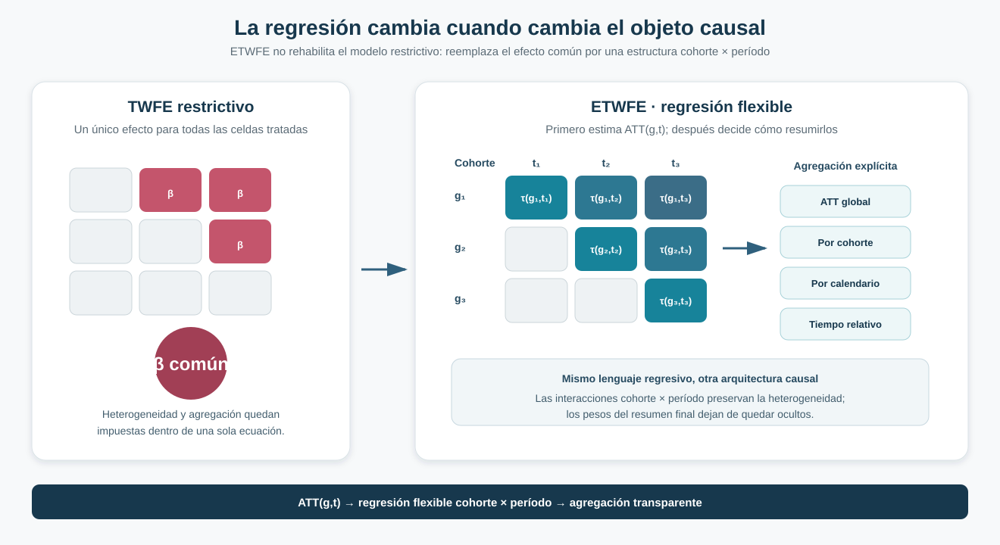
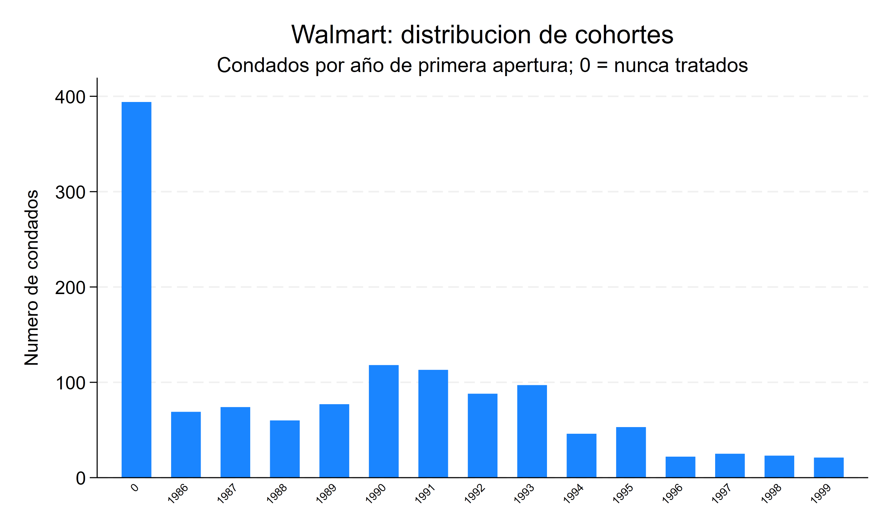
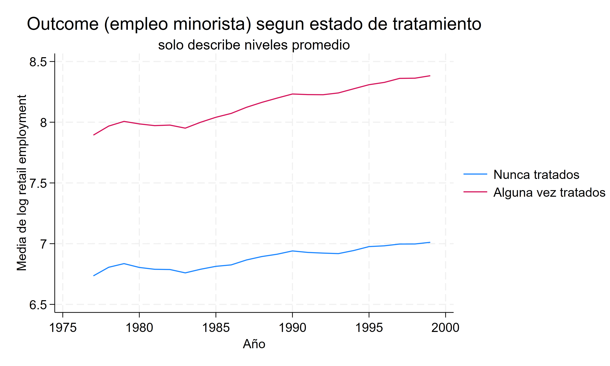
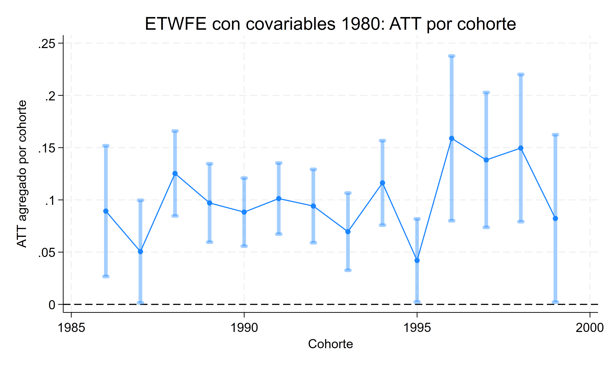
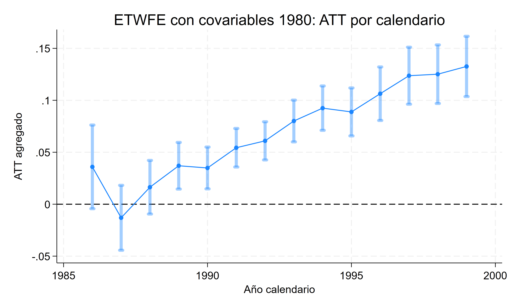
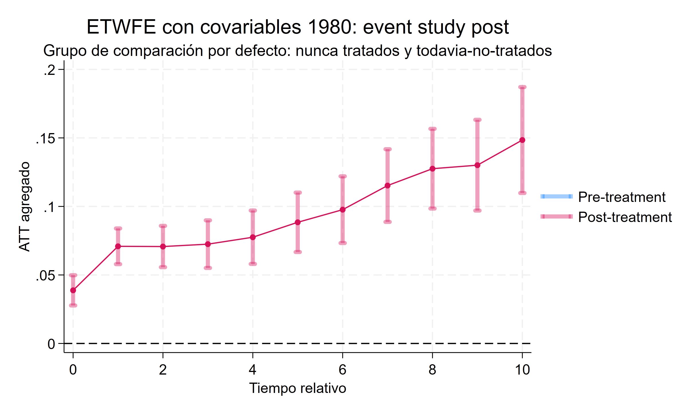
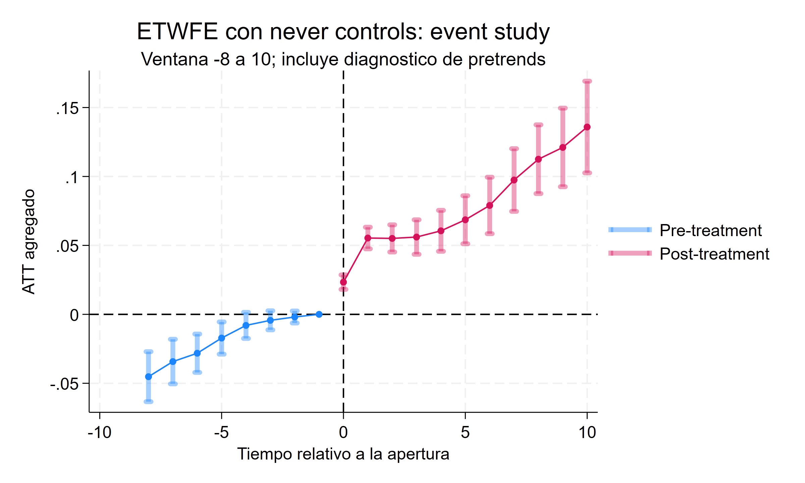
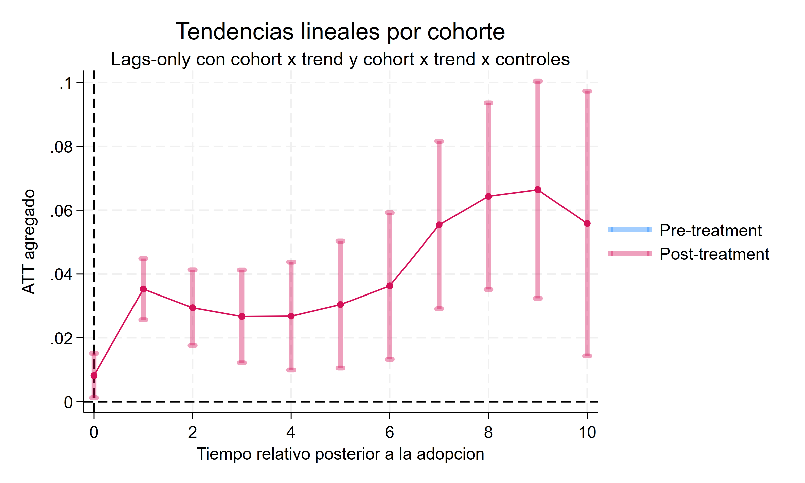
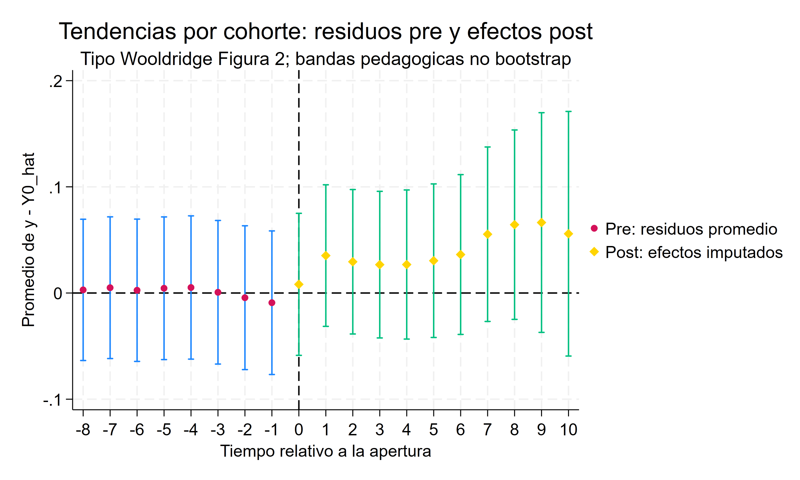

Cuando la regresión respeta la heterogeneidad: Wooldridge y ETWFE en Difference-in-Differences
De los efectos por cohorte y período a una formulación regresiva flexible y agregados transparentes
La regresión no es el problema; la restricción sí
Wooldridge muestra cómo una especificación suficientemente flexible puede recuperar efectos por cohorte y período sin volver a comprimir la heterogeneidad dentro del coeficiente único del TWFE convencional.
Pregunta central
¿Cómo recuperar efectos por cohorte y período mediante una regresión sin volver a las restricciones del TWFE convencional?
Respuesta corta: reemplazar el tratamiento único por interacciones que permitan un efecto para cada cohorte y período, estimar primero esos objetos causales y agregarlos después mediante una regla explícita.
El problema no es la regresión, sino la restricción
La crisis moderna de Difference-in-Differences no implica abandonar el lenguaje regresivo. Implica abandonar una ecuación demasiado rígida para un diseño con adopción escalonada y efectos heterogéneos.
El TWFE convencional resume toda la exposición mediante un único parámetro:
\[ Y_{it}=\alpha_i+\lambda_t+\beta D_{it}+u_{it}. \]
Esa especificación trata como si el efecto fuera el mismo para todas las cohortes y en todos los períodos. ETWFE —Extended Two-Way Fixed Effects— cambia la ecuación: permite que cada celda tratada tenga su propio efecto \(\tau_{g,t}\).
La afirmación relevante no es que “TWFE vuelve a estar bien”. ETWFE conserva herramientas regresivas familiares, pero deja atrás la restricción que originó el problema.
De ATT(g,t) a una regresión flexible
El objeto causal continúa siendo:
\[ ATT(g,t)=E\left[Y_{it}(1)-Y_{it}(0)\mid G_i=g\right]. \]
Describe el efecto medio para la cohorte que adopta en \(g\), observada en el período \(t\). La especificación flexible incluye interacciones entre cohorte, calendario y estado tratado para recuperar esos efectos de celda.
Sin covariables, la arquitectura puede escribirse esquemáticamente como:
\[ Y_{it}=\alpha_i+\lambda_t+ \sum_g\sum_{s\geq g}\tau_{g,s}\,\mathbf{1}\{G_i=g,t=s\}+u_{it}. \]
Cada interacción identifica una celda tratada. Bajo tendencias paralelas y ausencia de anticipación, \(\tau_{g,s}\) representa su \(ATT(g,s)\). Las observaciones nunca tratadas y todavía no tratadas identifican la evolución sin exposición; las interacciones permiten que las desviaciones posteriores varíen entre cohortes y calendarios. La flexibilidad de los efectos no libera al modelo de esos supuestos sobre el contrafactual.

El orden importa: el agregado no se impone desde el comienzo. Primero se estima la colección \(ATT(g,t)\); después se decide qué cohortes, años u horizontes deben pesar en el resumen.
Continuidad con Callaway–Sant’Anna y BJS
La secuencia de soluciones modernas puede resumirse sin convertirlas en métodos rivales:
- Callaway–Sant’Anna: organiza la identificación directamente alrededor de comparaciones \(ATT(g,t)\).
- Borusyak–Jaravel–Spiess: aprende \(Y(0)\) con observaciones sin tratamiento e imputa el contrafactual para las tratadas.
- Wooldridge: demuestra cuándo esos objetos modernos pueden recuperarse mediante una regresión flexible.
Esta formulación conecta los estimandos del DiD moderno con la práctica regresiva aplicada.
ETWFE, ETWM e imputación: coincidencias específicas
En este panel lineal y balanceado, la versión que utiliza efectos fijos de cohorte en lugar de efectos fijos individuales produce un agregado de 0,0978, prácticamente igual al ETWFE sin covariables. El taller interpreta esa proximidad como una verificación de equivalencias tipo ETWFE/ETWM dentro de esta especificación, no como nueva evidencia empírica ni como una identidad general entre formulaciones.
Una segunda conexión aparece al permitir tendencias por cohorte. Estimar el modelo de \(Y(0)\) únicamente con observaciones sin tratamiento y promediar después \(Y-\widehat Y(0)\) sobre las tratadas reproduce el agregado de 0,0352. La coincidencia vincula la regresión extendida con una lectura por imputación cuando ambas representan el mismo espacio funcional; no convierte a ETWFE y BJS en el mismo estimador.
Aplicación: aperturas de Walmart y empleo minorista
La aplicación sigue aperturas de Walmart en condados de Estados Unidos y la evolución del empleo minorista local.
Panel
1.280 condados entre 1977 y 1999: 23 períodos y 29.440 observaciones.
Tratamiento
Primera apertura de Walmart. El indicador permanece activo desde el año de entrada.
Resultado
Logaritmo del empleo minorista a nivel de condado.
Timing
Cohortes tratadas entre 1986 y 1999; 886 condados están tratados al final del panel.


Otros 394 condados nunca reciben una apertura durante la ventana observada. En la especificación principal, estos condados y las cohortes todavía no tratadas construyen el grupo de comparación mientras permanecen sin exposición.
Covariables y comparación
La especificación central incorpora características pretratamiento relacionadas con estructura manufacturera, pobreza y educación secundaria, medidas alrededor de 1980. Al ser anteriores a las aperturas analizadas, pueden utilizarse para permitir trayectorias contrafactuales condicionales sin controlar por variables potencialmente afectadas por Walmart.
Las covariables no entran como simples controles aditivos. Se centran e interactúan con la estructura de heterogeneidad para preservar la interpretación de los coeficientes principales como promedios de cohorte y período.
Para estudiar leads y pretrends se utiliza un comparador estable formado únicamente por los 394 condados nunca tratados. Cambiar el grupo de comparación modifica cómo se identifica el contrafactual. El ATT objetivo puede mantenerse si se conservan las mismas celdas y ponderaciones; el agregado cambia de población si también varían el soporte o la composición.
Resultado agregado
ETWFE con covariables
0,0898
ATT agregado sobre observaciones tratadas bajo la especificación flexible central
Inferencia
EE 0,0103
IC95% [0,0696; 0,1099]
La estimación sugiere un aumento medio del log del empleo minorista de aproximadamente 0,090 entre las observaciones tratadas que integran el agregado. La precisión estadística del coeficiente no resuelve la credibilidad del diseño: las trayectorias previas y la sensibilidad del contrafactual deben evaluarse antes de sostener una interpretación causal fuerte.
Los errores estándar se agrupan por condado para reconocer la dependencia temporal. La inferencia de los agregados utiliza el método delta y la covarianza conjunta de los efectos estimados; no basta promediar los errores estándar de las celdas.
Qué cambia entre especificaciones
| Especificación | ATT agregado | EE | Lectura |
|---|---|---|---|
| TWFE restrictivo | 0,0810 | 0,0081 | Impone un efecto común para todas las cohortes y períodos |
| ETWFE sin covariables | 0,0978 | 0,0099 | Permite heterogeneidad completa cohorte × período |
| ETWFE con covariables pretratamiento | 0,0898 | 0,0103 | Flexibiliza los efectos y condiciona el contrafactual en características de 1980 |
| ETWFE con solo nunca tratados | 0,0740 | 0,0078 | Cambia el comparador y habilita leads frente a un grupo estable |
| ETWFE con tendencias por cohorte | 0,0352 | 0,0092 | Permite trayectorias lineales distintas entre cohortes |
La tabla no establece un ranking. Cada fila modifica restricciones, comparadores o trayectorias contrafactuales. La cercanía entre TWFE (0,0810) y ETWFE central (0,0898) tampoco implica que ambos estimen el mismo objeto.
Cómo se agregan los ATT(g,t)
Una vez estimadas las celdas elementales, la misma especificación puede responder preguntas diferentes:
Global
Promedia los efectos sobre las observaciones tratadas incluidas.
Por cohorte
Resume la experiencia media de cada año de primera apertura.
Por calendario
Combina cohortes ya tratadas dentro de cada año observado.
Por exposición
Agrupa celdas con igual distancia temporal desde la apertura.
Estas reglas no son nombres alternativos para un mismo coeficiente. Cambian qué población y qué horizonte dominan el resumen. En horizontes largos participan menos cohortes, por lo que también cambia la composición del estimando.
En el agregado simple de este panel balanceado, cada celda cohorte-año pesa según su número de condados tratados. Las cohortes tempranas aportan más años posteriores y, por ello, más observaciones al total. Dar igual peso a cada cohorte respondería otra pregunta.


Event study y dinámica
El event study con nunca tratados organiza los efectos alrededor de la primera apertura y utiliza K=−1 como período base.


Con este comparador estable, los efectos posteriores seleccionados son 0,0234 en K=0, 0,0554 en K=1, 0,0686 en K=5 y 0,1359 en K=10. La trayectoria creciente no puede leerse aisladamente de las diferencias previas.
Qué revelan los pretrends
Antes de la apertura, las estimaciones alcanzan −0,0452 en K=−8, −0,0343 en K=−7, −0,0282 en K=−6 y −0,0172 en K=−5. El test conjunto rechaza:
Diagnóstico de pretrends
\(\chi^2(7)=40{,}16\) · p < 0,001
Los condados que posteriormente reciben Walmart ya presentan diferencias sistemáticas respecto de los nunca tratados. Incorporar leads permite observar el problema; no lo corrige.
Este diagnóstico limita una lectura causal limpia de los efectos posteriores. Una especificación moderna puede evitar las restricciones del TWFE tradicional y, al mismo tiempo, descansar en una comparación empírica poco creíble.
Sensibilidad a tendencias por cohorte
La especificación central estima 0,0898. Cuando se permiten tendencias lineales específicas por cohorte, el agregado cae a 0,0352.
ETWFE central
0,0898
trayectorias comunes condicionales
Tendencias por cohorte
0,0352
EE 0,0092 · IC95% [0,0171; 0,0533]


La segunda cifra no debe declararse automáticamente como “el efecto verdadero”. La comparación muestra que el resultado depende de cómo se modelan las trayectorias contrafactuales. Junto con los pretrends, esa sensibilidad impide presentar la aplicación como una estimación causal definitiva del efecto de Walmart.
La reconstrucción del mismo modelo con tendencias, ajustado solo en observaciones no tratadas, produce un promedio de \(Y-\widehat Y(0)\) de 0,0352, coincidente con el agregado ETWFE. La equivalencia es del modelo y del promedio: los residuos previos cercanos a cero son parte del ajuste y no una validación independiente de tendencias paralelas.
ETWFE frente a TWFE, C&S y BJS
| Arquitectura | Punto de partida | Construcción principal |
|---|---|---|
| TWFE restrictivo | Un efecto común | Regresión única con heterogeneidad limitada |
| Callaway–Sant’Anna | \(ATT(g,t)\) | Comparaciones explícitas por cohorte y período |
| BJS | \(Y(0)\) | Imputación con observaciones no tratadas |
| Wooldridge / ETWFE | \(ATT(g,t)\) | Regresión flexible que recupera efectos cohorte × período |
Las tres soluciones modernas comparten el objetivo de mantener visibles el estimando, el contrafactual y la agregación. Wooldridge aporta una formulación especialmente cercana a la práctica regresiva, no un retorno al coeficiente único.
Qué mejora y qué supuestos permanecen
ETWFE admite heterogeneidad por cohorte y período, vuelve explícita la agregación y permite incorporar covariables pretratamiento dentro de una estructura coherente. La interpretación causal continúa requiriendo:
- SUTVA y tratamiento correctamente medido;
- ausencia de anticipación;
- tendencias paralelas condicionales creíbles;
- covariables no afectadas por el tratamiento;
- soporte suficiente para las celdas y horizontes reportados;
- inferencia agrupada que reconozca la dependencia serial;
- una decisión explícita sobre comparador y regla de agregación.
La equivalencia algebraica entre estimadores no reemplaza ninguno de estos supuestos de identificación.
Conclusión
Wooldridge demuestra que la regresión sigue siendo una herramienta válida para Difference-in-Differences moderno cuando la especificación conserva la heterogeneidad causal relevante y la agregación permanece explícita. ETWFE no rehabilita el TWFE restrictivo: estima una ecuación distinta, alineada con los efectos por cohorte y período.
En la aplicación Walmart, ETWFE produce agregados positivos y una dinámica creciente. Pero los pretrends son sistemáticos y permitir tendencias por cohorte reduce el agregado de 0,0898 a 0,0352. La lección final es metodológica y empírica a la vez: flexibilizar el estimador no sustituye la credibilidad del diseño.